ระบบบริหารงบประมาณ (Budgeting Management System)#
เอกสารนี้สำหรับ :: พนักงานทั่วไป (Budget User)
กระบวนการวางแผนการใช้จ่ายงบประมาณ#
การวางแผนการใช้จ่ายงบประมาณบน Excel#
หลังจากที่ฝ่ายแผน ทำการสร้างงบประมาณในระบบแล้ว ทางฝ่ายแผน จะส่งไฟล์ Excel ให้กับผู้รับผิดชอบงบประมาณตาม Analytic Account ซึ่งผู้รับผิดชอบจะต้องทำการวางแผนงบประมาณของปีนั้น ๆ ให้ถูกต้อง ครบถ้วนตามงบประมาณที่ได้รับ จากนั้น Save แล้วส่งไฟล์ Excel ที่ทำการวางแผนเรียบร้อยแล้วคืนให้กับฝ่ายแผน
รายละเอียดการกรอกข้อมูลการวางแผนบน Excel
- เลือก Activity Group: กิจกรรมที่ผู้ใช้งานต้องการวางแผนการใช้จ่ายงบประมาณ
- กรอกตัวเลข ตามแผนการที่วางไว้ตามแต่ละเดือน
- ยอดรวมงบประมารที่วางแผน (N:7) จะต้องเท่ากับ Released (K:4)
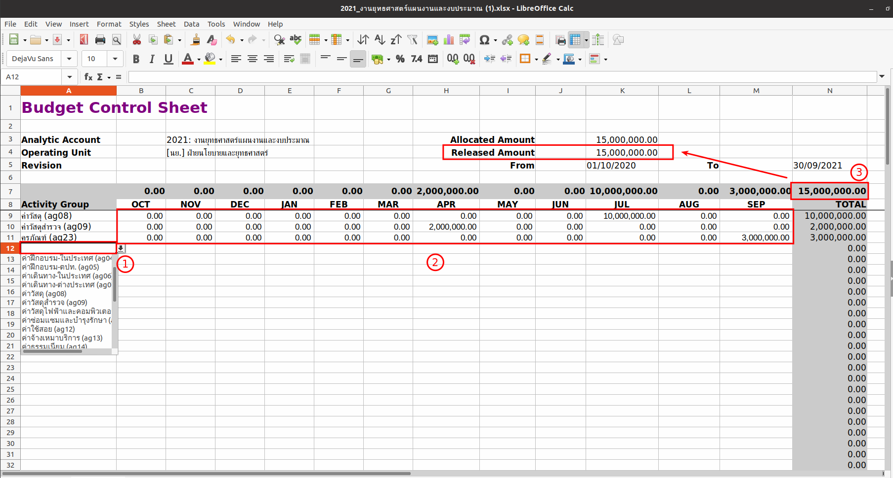
Note
การ Copy ข้อมูลจากที่อื่นมาลงใน Excel จะต้องระวังเรื่องตัวอักษร การเว้นวรรค และอื่น ๆ ที่อาจะทำให้ชื่อที่ copy มากับในระบบไม่ตรงกัน แล้วระบบจะไม่สามารถ Import ข้อมูลนั้นเข้าไปได้
สิ้นสุดการกรอกข้อมูลการวางแผนใน Excel
การวางแผนการใช้งบประมาณบนระบบ#
Menu :: Budgeting > Budgeting > Budget Control Sheet
- เลือก Budget Control Sheet ที่ต้องการวางแผนงบประมาณ
-
กดปุ่ม "Edit" เพื่อแก้ไขข้อมูล
- ไปที่ Tab Reset Options: ใช้สำหรับการควบคุมการสร้าง Activity Group
- เลือก Activity Group ทั้งหมดที่ต้องการวางแผนการใช้จ่ายงบประมาณ
- ตรวจสอบข้อมูล ถูกต้องครบถ้วน กด "Save"
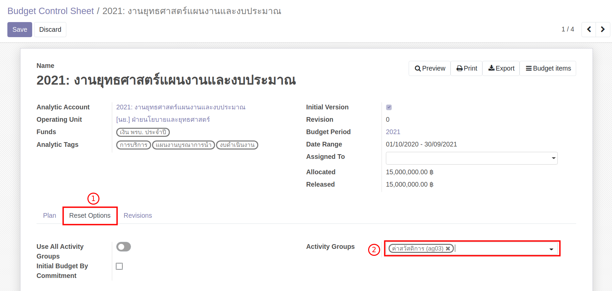
-
วางแผนการใช้จ่ายลงในตาราง ซึ่งมีขั้นตอนดังนี้
- ไปที่ Tab Plan
- กดปุ่ม "Reset Plan" เพื่อให้ระบบสร้างข้อมูลสำหรับการวางแผนการใช้จ่ายงบประมาณ
- กดปุ่ม "Edit" เพื่อที่จะสามารถแก้ไขตัวเลขข้อมูลการวางแผนได้
- กรอกตัวเลข วางแผนการใช้จ่ายลงในตาราง
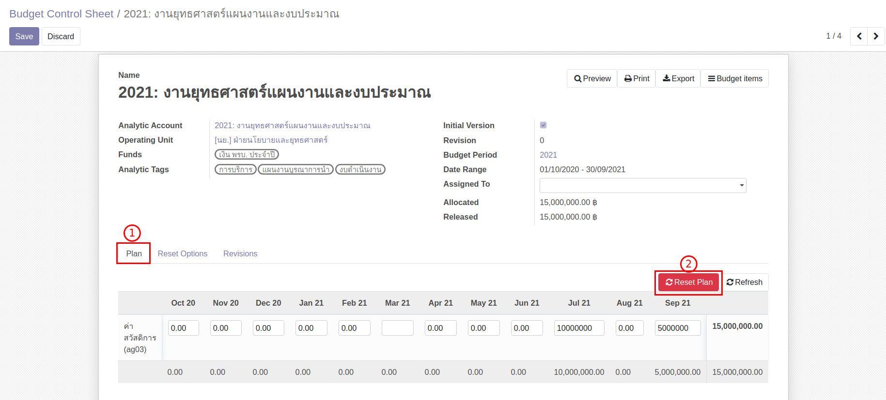
-
ตรวจสอบยอดรวมของเงินที่วางแผน จะต้องเท่ากับ Released (ยอดเงินที่ใช้ได้ปัจจุบัน)

-
หากต้องการเพิ่ม Activity Group
- ไปที่ Tab Reset Options
- เลือก Activity Group ที่ต้องการเพิ่ม
- ไปที่ Tab Plan จากนั้นกดปุ่ม "Refresh"
-
ตรวจสอบข้อมูล ถูกต้องครบถ้วน
- กด "Save" เพื่อบันทึกข้อมูล
- หากต้องการแก้ไข กดปุ่ม "Edit"
Smart Button บน Budget Control Sheet
ที่หน้า Budget Control Sheet (Form View) จะมี Smart Button 2 ปุ่ม 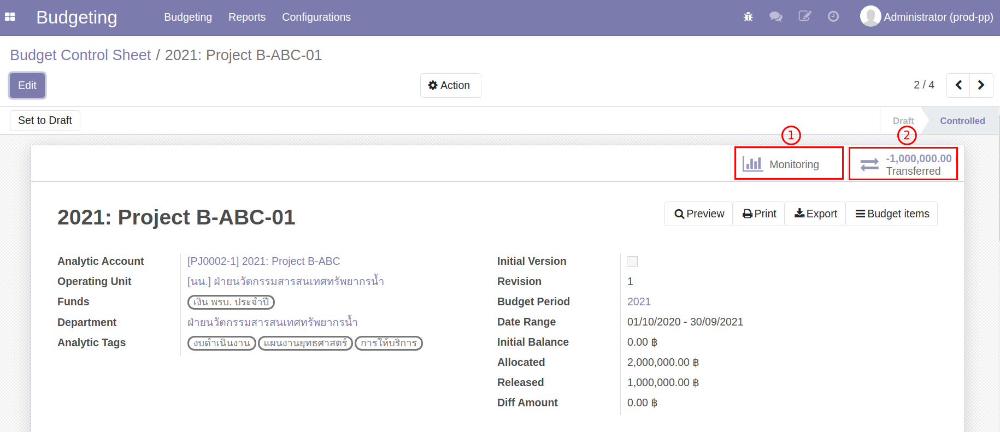
-
Monitoring: แสดงการใช้จ่ายงบประมาณ 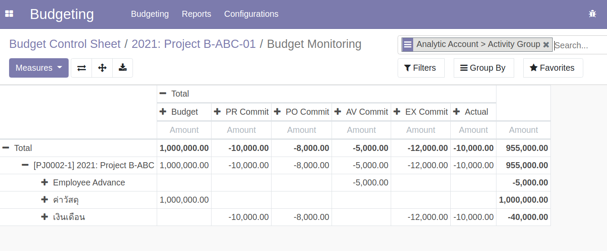
-
Transferred: แสดงรายละเอียดการโอนงบประมาณที่เกิดขึ้น
- รายละเอียดของผู้โอนงบประมาณ
- รายละเอียดผู้รับงบประมาณ
- ยอดงบประมาณที่ถูกโอน

กระบวนการโอนงบประมาณ#
สามารถใช้กับ Use Cases
- (3) การโอนเงินออกจาก Analytic Account ที่ถูก Extend
ผู้ให้และผู้รับงบประมาณ มีการตกลงกันว่าต้องการโอนงบประมาณ จากนั้นจึงเริ่มการทำงานในระบบ โดยเริ่มจาก
- หยุดการใช้งบประมาณบนระบบ
- การสร้างเอกสาร Budget Transfer
- แก้ไขแผนการใช้จ่าย หลังจากโอนงบประมาณเสร็จสิ้น
การหยุดใช้งบประมาณบนระบบ#
ทั้งผู้ให้และผู้รับงบประมาณ เข้าระบบเพื่อหยุดการใช้งบประมาณของตนเอง โดยทำตามขั้นตอน ดังนี้
Menu :: Budgeting > Budgeting > Budget Control Sheet
- เข้าไปที่หน้า Budget Control Sheet ของตนเอง ระบบแสดงสถานะของ Budget Control Sheet เป็น Control
- กดปุ่ม Reset to Draft เปลี่ยนสถานะเอกสารจาก Control เป็น Draft เพื่อหยุดการเบิกใช้งบประมาณ
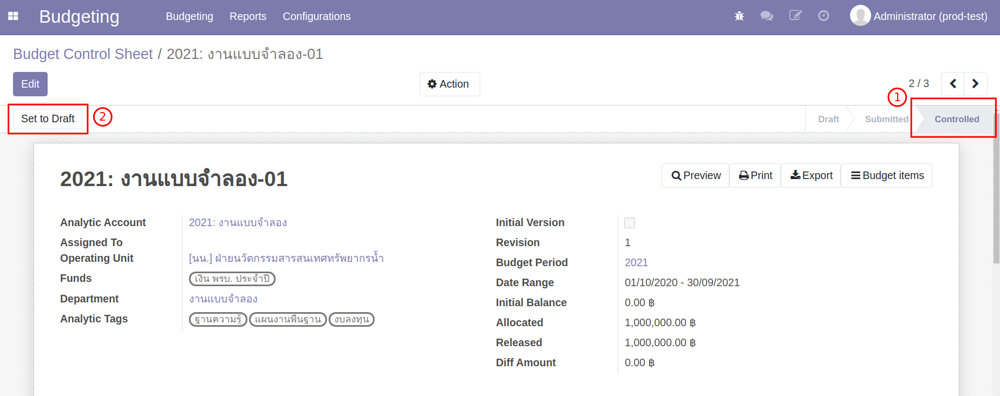
การสร้างเอกสาร Budget Transfer#
Menu :: Budgeting > Budgeting > Budget Transfer
-
กดปุ่ม "Create" เพื่อสร้างเอกสาร 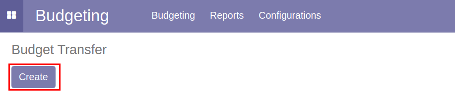
-
กดปุ่ม "Add a line" เพื่อกรอกรายละเอียด ดังนี้
- Source: เลือกผู้ให้งบประมาณ
- Source Analytic Tags: เลือก Tags ที่มี โดยระบบจะดึงค่าตั้งต้นให้ หาก Analytic Account นั้นมี Tags อย่างละ 1 ตัว
- Source Fund: แหล่งงบประมาณ
- Available: ยอดงบประมาณคงเหลือ
- Target: ผู้รับงบประมาณ
- Target Analytic Tags: เลือก Tags ที่มี โดยระบบจะดึงค่าตั้งต้นให้ หาก Analytic Account นั้นมี Tags อย่างละ 1 ตัว
- Target Fund: แหล่งงบประมาณ
- Available: ยอดงบประมาณคงเหลือ
- Transfer Amount: ยอดงบประมาณที่ต้องการโอน
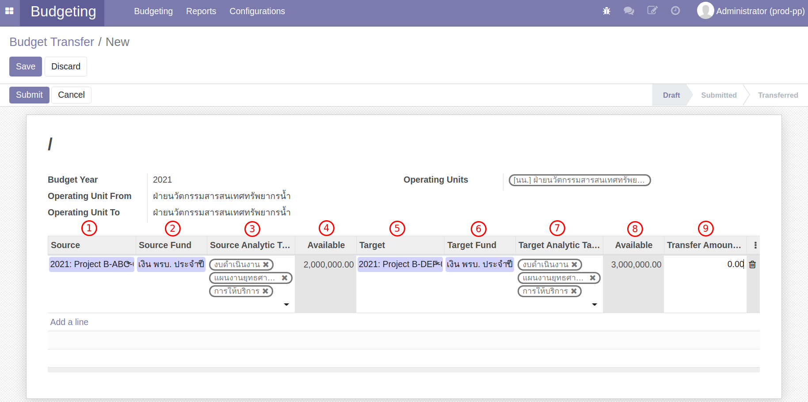
-
ตรวจสอบข้อมูล หากถูกต้องครบถ้วนกดปุ่ม "Save" หากต้องการแก้ไขกดปุ่ม "Edit"
-
กดปุ่ม "Submit" ระบบจะส่งเอกสารเพื่อขออนุมัติการโอนงบประมาณ
- สถานะเอกสารเปลี่ยนจาก Draft เป็น Submit
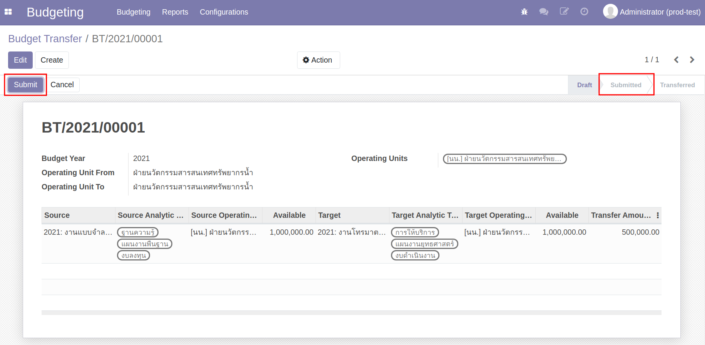
- Tab Review จะแสดงสถานะการอนุมัติ
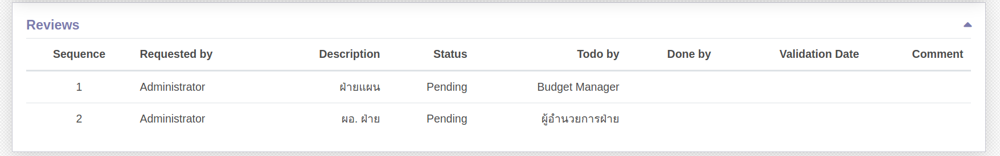
Note
หากฝ่ายแผนพิจารณาให้โอนงบประมาณได้ ระบบจะส่งเอกสารอนุมัติตามลำดับ 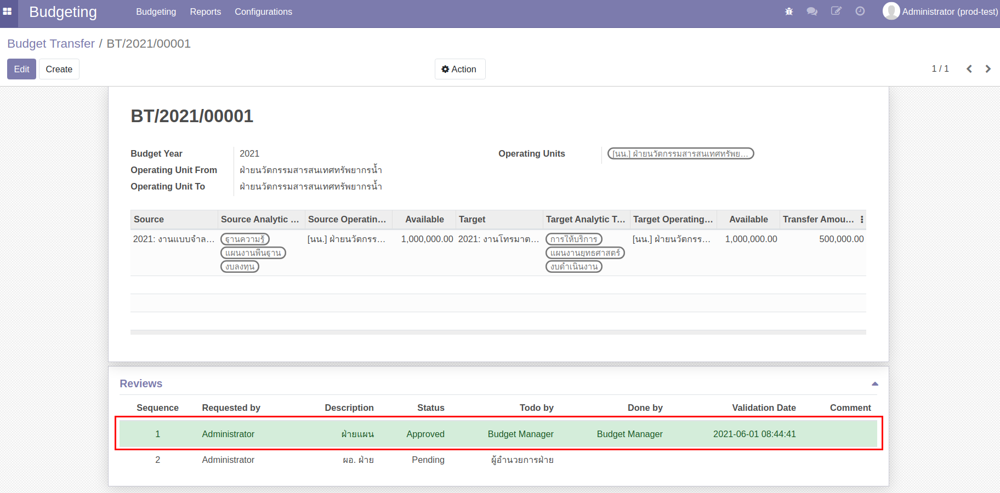
-
เมื่อได้รับการอนุมัติครบถ้วนแล้ว เอกสารจะเปลี่ยนสถานะจาก Sunmitted เป็น Transfered

Note
หากยังไม่มี Analytic Tags ในระบบ ให้แจ้งฝ่ายแผนให้ใส่ Analytic Tags ในระบบ
การแก้ไขแผนการใช้จ่าย หลังจากโอนงบประมาณเสร็จสิ้น#
เมื่อทำการโอนงบประมาณเสร็จสิ้น ทั้งผู้ให้และผู้รับงปบระมาณ จะต้องวางแผนการใช้จ่ายใหม่ ตามกรอบงบประมาณที่เปลี่ยนแปลงไปจากการโอนงบประมาณ
Menu :: Budgeting > Budgeting > Budget Control Sheet
ผู้ให้งบประมาณ
-
ผู้ให้งบประมาณ เมื่อโอนงบประมาณสำเร็จ กรอบงบประมาณ Release จะลดลงตามยอดงบประมาณที่โอน
- Allocate: กรอบงบประมาณที่ได้รับการจัดสรรจากฝ่ายแผน
- Release: กรอบงบประมาณล่าสุด
- Diff: ผลต่างระหว่าง Release กับ ผลรวมงบประมาณที่วางแผนในปัจจุบัน
-
กดปุ่ม "Edit" เพื่อวางแผนการใช้จ่ายงบประมาณใหม่

Note
ระบบไม่อนุญาติให้วางแผนการใช้จ่ายเดือนในอดีต หากวางแผนการใช้จ่ายส่วนใหญ่อยู่ในอดีตจะไม่สามารถแก้ไขได้ ให้วางแผนแบบ ติดลบ เพื่อให้ผลรวมงบประมาณเท่ากับ Release
- เมื่อแก้ไขแผนการใช้จ่ายเสร็จสิ้น กดปุ่ม "Save" เพื่อบันทึกข้อมูล
- กดปุ่ม "Submit" และ "Control" เพื่อเริ่มการใช้จ่ายงบประมาณอีกครั้ง
ผู้รับงบประมาณ
-
ผู้รับงบประมาณ เมื่อโอนงบประมาณสำเร็จ กรอบงบประมาณ Release จะเพิ่มขึ้นตามยอดงบประมาณที่โอน
- Allocate: กรอบงบประมาณที่ได้รับการจัดสรรจากฝ่ายแผน
- Release: กรอบงบประมาณล่าสุด
- Diff: ผลต่างระหว่าง Release กับ ผลรวมงบประมาณที่วางแผนในปัจจุบัน
-
กดปุ่ม "Edit" เพื่อวางแผนการใช้จ่ายงบประมาณใหม่ 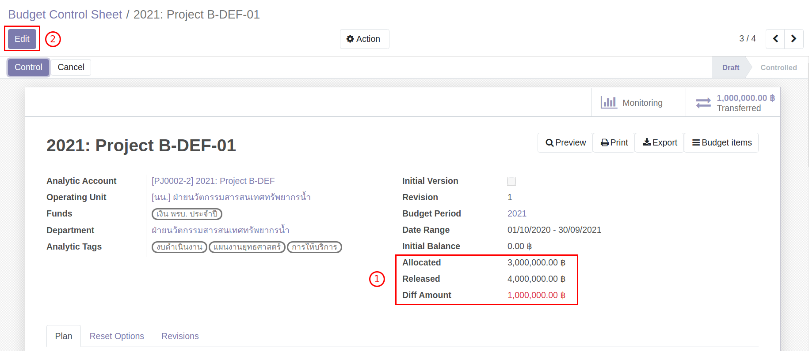
Note
ระบบไม่อนุญาติให้วางแผนการใช้จ่ายเดือนในอดีต หากวางแผนการใช้จ่ายส่วนใหญ่อยู่ในอดีตจะไม่สามารถแก้ไขได้ ให้วางแผนแบบ ติดลบ เพื่อให้ผลรวมงบประมาณเท่ากับ Release
-
เมื่อแก้ไขแผนการใช้จ่ายเสร็จสิ้น กดปุ่ม "Save" เพื่อบันทึกข้อมูล
- กดปุ่ม "Submit" และ "Control" เพื่อเริ่มการใช้จ่ายงบประมาณอีกครั้ง